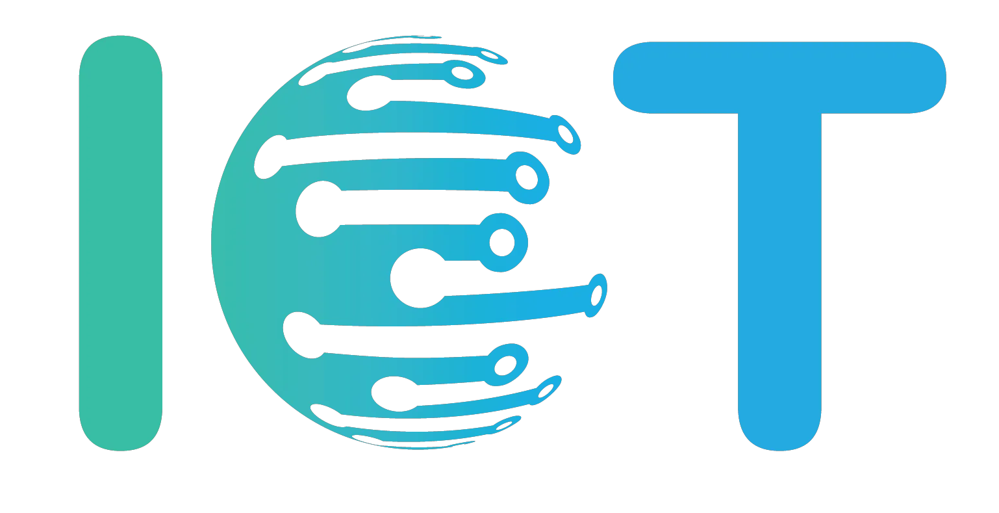

A Internet é o maior e mais desenvolvido sistema de rede capaz de conectar pessoas do mundo todo.
Por meio da Internet é possível visitar um museu em outro país, saber da previsão do tempo em outra cidade, enviar o resumo da aula para o colega que faltou, consultar o título de eleitor, entre outras infinidades de coisas.
Surpreendentemente, a Internet não é uma única rede, mas um conjunto de inúmeras redes conectadas entre si.
Mas o que seria uma rede de computadores?
A palavra rede serve para descrever um entrelaçamento de coisas que estão conectadas umas às outras. Pode ser um emaranhado de fios, de estradas ou de computadores.
Uma rede de computadores é, portanto, formada por dois ou mais computadores conectados entre si, podendo se comunicar uns com os outros e compartilhar arquivos, programas ou mesmo uma impressora.
E você sabia que existem diferentes tipos de redes de computadores espalhadas pelo mundo? Vamos ver quais são…
Existem basicamente quatro tipos de redes de computadores:

Vamos entender qual é a diferença entre elas?
A sigla PAN significa Personal Area Network, e ela permite a comunicação dos seus equipamentos pessoais.
Ela é uma rede conectada por fios ou wireless, com tecnologia para interligar aparelhos com um alcance de até 10 metros.
Uma rede PAN é centrada em uma pessoa e permite a comunicação dos seus equipamentos pessoais.
Você usa uma rede PAN quando você conecta por exemplo seu smartphone ao seu computador para transferir fotos de um para outro.
LAN é uma sigla em inglês que significa “Local Area Network”. Este termo geralmente se refere a redes de computadores restritas a um local físico como uma casa, um escritório ou uma empresa.
Por exemplo, uma família que possui três computadores e uma impressora pode conectá-los em uma rede LAN. Dessa forma, os arquivos musicais da família poderiam ficar numa pasta compartilhada, para que todos da casa possam usar.
Com os computadores da casa conectados em rede, todos da família podem também compartilhar textos, fotos, vídeos e podem trabalhar juntos em um mesmo arquivo compartilhado.
Você já deve ter frequentado uma LAN House, certo? Uma LAN House é um local caracterizado por possuir diversos computadores conectados em uma rede de modo a permitir a interação entre seus usuários.
Desta forma, pessoas podem usar os computadores da LAN House para jogar um jogo em conjunto - um jogo multiplayer.
O termo LAN foi extraído das letras iniciais de Local Area Network, ou seja, rede local. A palavra House significa casa. Logo podemos traduzir LAN House como uma “casa de jogos em rede”.

MAN é uma sigla em inglês que significa “Metropolitan Area Network”. Esta rede de carácter metropolitano liga computadores e utilizadores numa área geográfica maior que a abrangida por uma LAN.
Uma MAN normalmente resulta da interligação de várias LAN’s, cobrindo uma área geográfica de média dimensão como, por exemplo, o campus de uma universidade ou uma cidade inteira.

WAN é uma sigla em inglês que significa “Wide Area Network”, e como o próprio nome indica é uma rede de telecomunicações que está dispersa por uma grande área geográfica.
A WAN distingue-se de uma MAN pelo seu porte e estrutura de telecomunicações.
As redes WAN são muito importantes, pois empresas com milhares de computadores precisam de uma rede para trafegar grandes quantidades de informações entre filiais em diferentes localidades geográficas.
No princípio, a Internet conectava apenas dois computadores, em seguida, evoluiu para a criação da World Wide Web, conectando um grande número de computadores e cobrindo o mundo todo.
A Internet móvel surgiu ligando dispositivos móveis na Internet. Em seguida, as pessoas começaram a se juntar na Internet por meio das redes sociais.
Finalmente, ela está se movendo em direção à Internet das Coisas, ligando todos os objetos do dia a dia com a Internet. Vamos aprender um pouco sobre a história da Internet?
Você deve estar imaginando que a Internet não tem dono, pois qualquer pessoa pode conectar um computador ou qualquer outro dispositivo à rede. Isso mesmo! A Internet não possui uma sede central, nem uma central de serviços. Ela foi criada pelo governo americano na década de 1950. Mas como será que ela surgiu? Vamos conhecer melhor essa história?
A Internet surgiu em 1957, durante a Guerra Fria entre os Estados Unidos e a União Soviética. Um ataque pelo ar era uma ameaça constante para os americanos. Mas o que toda essa história de guerra tem a ver com a Internet?
Na época da Guerra Fria os americanos criaram a Agência de Projetos Avançados de Defesa (Advanced Research and Projects Agency - ARPA), cujo objetivo era desenvolver uma rede de computadores capaz de trocar informações por meio de tecnologias de comunicação independentes.
Os americanos queriam evitar a perda de informações, caso parte da rede física ficasse inativa devido a uma destruição parcial, provocada, por exemplo, por um ataque nuclear. Dessa forma, uma parte da rede danificada não impactaria o funcionamento dos pontos não atingidos.
Em 1969 surgiu a primeira versão da rede, a Arpanet (Advanced Research Projects Agency Network) que conectava apenas quatro pontos.
A ideia era criar uma rede tecida como uma teia de aranha (web, em inglês), na qual os dados se movessem buscando a melhor trajetória possível, podendo “esperar” caso as vias estivessem obstruídas.
Surgia aí outra ideia básica da Internet: a descentralização. Mas, como isso funciona na prática?
Suponha que você queira acessar o site da Samsung para pesquisar alguns produtos eletrônicos.
Então você usa um equipamento conectado à Internet, abre o seu navegador predileto e digita www.samsung.com na barra de endereços e, passados poucos segundos, a página inicial da Samsung é exibida na sua tela.
Como esse processo todo, aparentemente simples, ocorre?
Todos os computadores possuem um endereço numérico único chamado endereço IP.
Para que você possa acessar a página da Samsung, por exemplo, o seu computador precisa antes estabelecer uma conexão com o computador onde a página solicitada está hospedada.
Chamaremos, a partir de agora, o seu computador de cliente e o computador onde a página da Samsung está armazenada de servidor.
Imagine que o cliente, seu computador, com endereço IP 177.175.79.80 queira iniciar uma conexão com o servidor de endereço IP 185.187.87.88 para obter a página inicial da Samsung.
Mas, como o cliente, seu computador, sabe o endereço IP com o qual ele deve se conectar para obter a página inicial da Samsung se nada disso foi informado?
A única informação passada foi o endereço www.samsung.com na barra de endereços do navegador.
Quando um computador está conectado à Internet, ele está configurado para acessar um servidor especial chamado servidor de nomes ou servidor DNS (Domain Name System), como é mais conhecido.
Este servidor funciona como uma lista de endereços.
Quando você digita o endereço www.samsung.com na barra de endereços, está informando o endereço URL (Uniform Resource Locator) do site.
Se o navegador não conhecer o endereço IP para este endereço URL, então ele se conecta com o servidor DNS e pergunta:
“Olá. Tenho a URL www.samsung.com, você pode me informar qual é o endereço IP dela?”
O servidor então responde:
"Tenho sim, o endereço IP desta URL é 185.187.87.88."
Portanto…
O servidor DNS funciona como uma lista de endereços para encontrar o endereço IP da URL solicitada. É estabelecida uma conexão entre o cliente, seu computador, e o servidor onde está hospedada a página da Samsung. Através desta conexão ocorre o envio de pacotes.
Digamos que você esteja procurando um aparelho celular no site da Samsung, você vai clicando e navegando pelo conteúdo das páginas.
Conforme você vai navegando o cliente, seu computador, solicita mais páginas ao servidor para poder lhe mostrar na tela as informações que você solicitou.
As informações trocadas entre o cliente e o servidor, entre seu computador e o computador onde estão hospedadas as páginas da Samsung, são divididas em pacotes.
E o que são esses pacotes? São fragmentos menores dos dados que trafegam pela rede. Por exemplo, uma mensagem de email pode ser dividida em vários pacotes. Cada pacote contém algumas informações como: o endereço de origem, o endereço de destino e a sequência segundo a qual os pacotes devem ser reconstruídos ao chegar no seu destino.
Uma característica importante é a garantia de entrega, pois todos os pacotes que saem da origem possuem a garantia de que chegarão ao seu destino e que serão entregues de forma ordenada e sem modificações. Cada pacote pode viajar pela rede por diferentes caminhos, sendo enviado de um computador para o outro, na direção do seu destino.
Mas quem decide qual é o melhor caminho? É preciso usar um dispositivo chamado roteador. Roteadores são dispositivos capazes de realizar a comunicação entre várias redes que compõem a Internet. O roteador analisa cada pacote de informação e decide a melhor rota até o seu destino.
Mas o que acontece se uma rota estiver bloqueada?
Como existem vários roteadores conectados na mesma rede, é possível que um pacote pegue um caminho e outro pacote pegue outro caminho para chegar ao destino. É o mesmo que acontece quando estamos tentando fugir do trânsito. Podemos entrar em outra via, passar por outras ruas, mas avançamos na direção do destino.
Quando os pacotes chegam ao seu destino, a informação original é reconstituída.